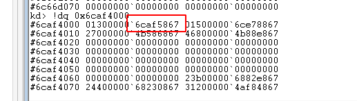

软件安全实验二
Table of Contents
1 实验题目
利用windbg进行虚实地址转换
2 实验目的
利用windbg对内核进行调试，实现虚拟地址向物理地址的转换
3 实验目的
4 实验内容
用windows7下的WinDbg连接虚拟机中的另一个Windows7，进而进行内核调试。
5 实验步骤
5.1 新建文本文档
新建一个txt文本文档，内容为“Hello,zss”
5.2 查看进程起始地址
调试机使用windbg连接虚拟机进行内核调试，查找notepad.exe进程，可以看到进程块起始地址
5.3 切换到notepad.exe
使用下面命令，然后再输入g命令将Windbg当前调试进程切换到notepad.exe
可以看到cr3的内容已经发生改变
5.4 查找虚拟地址
查找notepad中字符串所在的虚拟地址位置
测试是否正确，发现是自己写进去的字符串
将虚拟地址的十六进制转换为2进制
可以发现
PML4E索引：0000 0000=0x0
PDPTE索引：0000 0000=0x0
PDE索引：0000 0000 = 0x0
PTE索引：01011 0111 = 0xb7
页内偏移：1011 1011 0000 = 0xbb0
5.5 根据DirBase和PML4E计算地址
目标进程的DirBase为0x6c8d6000, PML4E索引为0，所以目的地址为：0x6c8d6000
5.6 根据PDPTE计算地址
因为PDPTE索引为0，所以目的地址为0x6c66d000
5.7 根据PDE计算地址
PDE索引为0，所以目的地址为：0x6caf4000

5.8 根据PTE索引计算地址
PTE索引为0xb7，所以要加上0x0b7*8，目的地址为：0x6caf5000+0x0b7*8
5.9 根据业内偏移和索引计算最终地址
页内偏移为0xbb0，索引在0x4aa1a000的基础上加上偏移值就是目的地址。可以看到我们在程序中输入的字符串